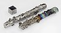

tungsten

Definition: Tungsten, or wolfram, is a chemical element with the symbol W and atomic number 74. Tungsten is a rare metal found naturally on Earth almost exclusively as compounds with other elements. It was identified as a new element in 1781 and first isolated as a metal in 1783. Its important ores include scheelite and wolframite, the latter lending the element its alternate name.
Source: Wikipedia
Wikipedia Page
Wikidata Page